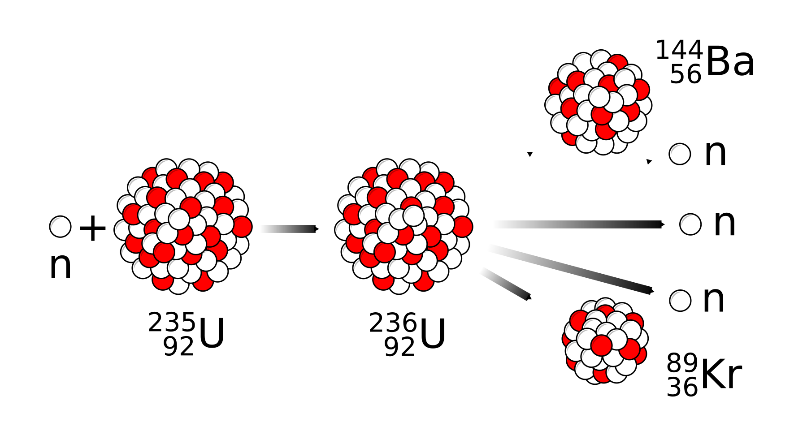
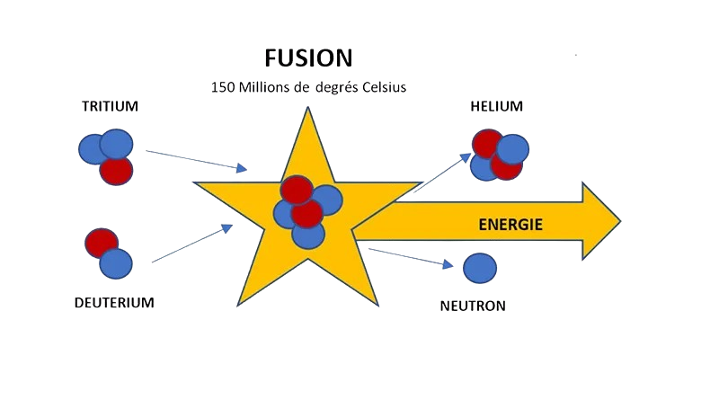
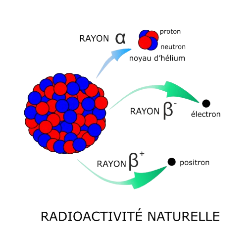
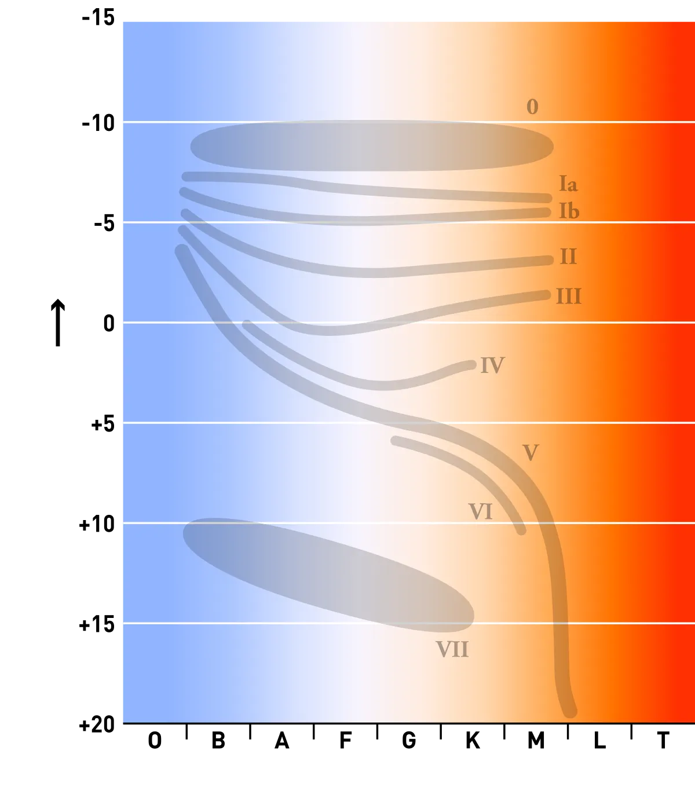

Pendant longtemps, l'origine des éléments a posé problème aux scientifiques du XIXe siècle. Une explication satisfaisante n'a pu être apportée qu'avec l'arrivée de la mécanique quantique et de la physique nucléaire, au début du XXe siècle. La genèse des éléments ne pouvait être expliquée avec les principes de la mécanique classique.
George Gamow fut le premier à penser, en 1942, que tous les éléments pouvaient avoir été formés au tout début de la vie de l'Univers, lors du Big Bang. Selon lui, les éléments se formaient par additions successives de neutrons sur les éléments déjà existants, additions suivies de désintégrations béta. C'était une idée élégante, mais il est vite apparu que l'Univers se refroidissait alors beaucoup trop vite pour pouvoir fabriquer des éléments plus lourds que le lithium 7 (7Li).
Il fallait donc trouver un autre moyen de les produire, ou plus précisément une autre explication quant à leur production.
En 1952 et de manière quasiment simultanée, deux articles parurent cette année-là, qui révolutionnèrent l'astrophysique. Le premier, signé par Alastair Cameron fut publié peu avant celui de Geoffrey Burbidge, Margaret Burbidge, William Fowler et Fred Hoyle. C'est dans ce second article que fut présentée une théorie complète de la nucléosynthèse stellaire, le rendant tellement célèbre qu'il est le plus souvent cité dans la littérature par les initiales de ses auteurs : « B2FH ».
Dans ces deux articles, les auteurs recherchaient quelles sont les conditions qui permettent de fabriquer les éléments en les synthétisant, et montrèrent que ces conditions sont réunies au cœur des étoiles. L'article B2FH brossait un panorama de l'origine des éléments, depuis la fusion de l'hydrogène jusqu'à la production des éléments les plus lourds lors des supernovas.
La fission nucléaire est le phénomène par lequel un noyau atomique lourd est scindé en deux ou en quelques nucléides plus légers. Cette réaction nucléaire s'accompagne de l'émission de neutrons et d'un dégagement d'énergie très important.
La fusion nucléaire est le processus par lequel deux noyaux atomiques légers s'unissent pour en former un seul plus lourd en libérant une énorme quantité d'énergie.
C'est une réaction nucléaire spontanée au cours de laquelle un noyau radioactif donne naissance à un noyau plus stable.
La « nucléosynthèse » est le terme utilisé pour décrire les processus de création des espèces chimiques dans l'Univers. Il existe principalement deux types de nucléosynthèses : la nucléosynthèse primordiale et la nucléosynthèse stellaire. Cela désigne la synthèse de noyaux atomiques en autres noyaux atomiques, par des procédés comme ceux vus précédemment.
BBN, pour l'anglais Big Bang Nucleosynthesis est un événement de nucléosynthèse qui, selon la théorie du Big Bang, s'est déroulé dans tout l'Univers pendant les premières dizaines de minutes de son histoire, dans un intervalle de temps compris entre 10 s et 20 min.
La nucléosynthèse primordiale a produit l'essentiel du deutérium, de l'hélium 3 et de l'hélium, et une faible proportion de lithium, de béryllium et de bore. Les autres noyaux, sont le produit de la nucléosynthèse stellaire, beaucoup plus tardive et toujours en cours, et la majeure partie du lithium, du béryllium et du bore provient de réactions de spallation, également dans les étoiles. Le protium (un isotope stable de l'hydrogène) se différencie des autres noyaux car il ne requiert aucune synthèse.
C'est le terme utilisé en astrophysique pour désigner l'ensemble des réactions nucléaires qui se produisent à l'intérieur des étoiles (fusion nucléaire et processus s) ou pendant leur destruction explosive (processus r, p, rp>) et dont le résultat est la synthèse de la plupart des noyaux atomique.
Le processus s est un ensemble de processus astrophysiques conduisant à la nucléosynthèse stellaire d'environ la moitié des éléments chimiques de numéro atomique supérieur à celui du fer, l'autre moitié étant produite par le processus pet le processus r.
Le processus p est un ensemble de processus conduisant à la nucléosynthèse stellaire d'éléments chimiques par capture de protons (d'où la lettre p) pour donner des isotopes pauvres en neutrons
La lettre r signifie qu'il s'agit d'une capture neutronique rapide, sous un flux neutronique très élevé, qui permet de produire, généralement à partir des éléments du pic du fer, des noyaux atomiques plus massifs en agrégeant des nucléons à partir des neutrons incidents avant que ces noyaux n'aient le temps de se désintégrer
La position d'une étoile sur le diagramme de Hertzsprung-Russell détermine en grande partie les éléments qu'elle synthétise.
Le processus de fusion nucléaire ne peut avoir lieu que dans des conditions de température et de pression particulières. A titre d'exemple, au cœur du Soleil, la pression est égale à 200 milliards de fois la pression atmosphérique terrestre et la température centrale atteint environ 15 millions de degrés. Dans ces conditions, les noyaux légers d'hydrogène (75% de la composition du Soleil) fusionnent en noyaux d'hélium (24%) approximativement deux fois plus lourds, créant ainsi la lumière et la chaleur que nous recevons. Selon les calculs, chaque seconde, 620 millions de tonnes d'hydrogène y sont transformées en 615,7 millions de tonnes d'hélium.
Pouvoir reproduire ce phénomène sur Terre permettrait en théorie de satisfaire définitivement les besoins énergétiques de l'humanité.
C'est précisément l'enjeu majeur de la recherche sur la fusion nucléaire « contrôlée ».
Les combustibles nécessaires à la fusion sont deux isotopes de l'hydrogène :
La bombe thermonucléaire - couramment appelée bombe H - constitue aujourd'hui la seule application pratique de la fusion nucléaire. Celle-ci a été testée pour la première fois en 1952 aux États-Unis dans la foulée de la maitrise de la bombe A (à fission nucléaire). Les armes thermonucléaires ont joué un rôle clé dans l'équilibre dissuasif entre les deux blocs pendant la guerre froide.
Des efforts de recherche sont menés depuis plus de 50 ans pour recréer les conditions de la fusion nucléaire au sein d'un réacteur. Toutefois, la maîtrise d'un processus contrôlé de fusion n'est pas encore démontrée et les technologies et matériaux adaptés à ces températures et pressions extrêmes ne sont pas encore disponibles pour une utilisation industrielle. Recréer un processus de fusion nucléaire s'avère beaucoup plus complexe que d'exploiter la réaction de fission en chaîne.
Cependant, des chercheurs ont réussi à plusieurs reprises à provoquer une fusion nucléaire, en utilisant plus d'énergie que celle dégagée. Le lundi 5 décembre 2023, des chercheurs du laboratoire national de Lawrence Livermore (Californie) ont réussi à faire une fusion nucléaire par l'utilisation de 192 lasers en dégageant plus d'énergie que celle utilisée. Ces lasers, tous pointés vers une un contenant en diamant de la taille d'un grain de poivre, on fusionné deux isotopes de l'atomes d'hydrogène (deutérium et tritium), en libérant 3.5 mégajoules (0.97 kWh), soit l'énergie utilisée par un fer à repasser pendant une heure.